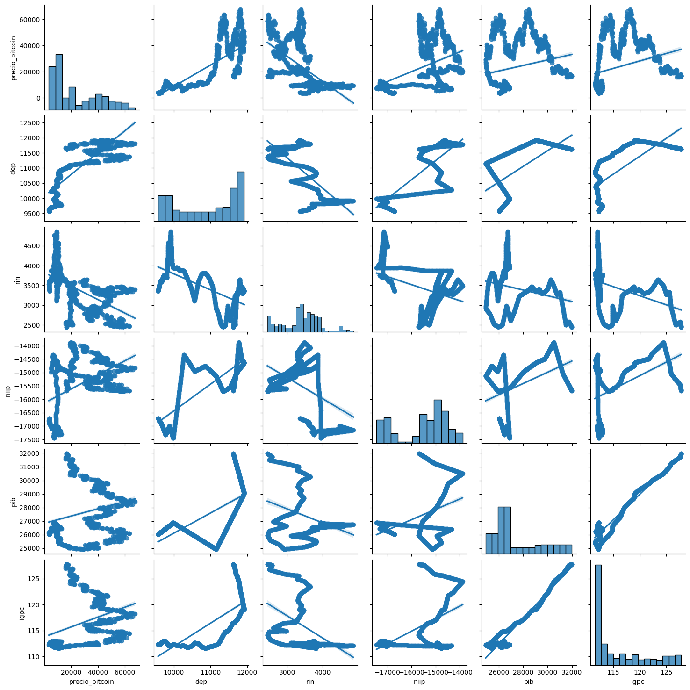

En junio de 2021, El Salvador hizo historia al convertirse en el primer país en adoptar Bitcoin como moneda de curso legal. Esta decisión audaz ha generado un intenso debate a nivel mundial sobre las posibles repercusiones económicas de integrar una criptomoneda en la economía de un país. Nuestro proyecto se centra en analizar y evaluar el impacto del precio del Bitcoin en la macroeconomía salvadoreña.
Para llevar a cabo este análisis, hemos recopilado datos históricos de diversas variables económicas clave, tales como el Producto Interno Bruto (PIB), el Índice de Precios al Consumidor (IPC), la deuda externa pública, las reservas de divisas y la inversión. Estos datos se comparan con el precio histórico del Bitcoin para identificar posibles correlaciones y patrones.
Utilizando técnicas avanzadas de análisis de datos, nuestro objetivo es proporcionar una visión detallada de cómo la adopción del Bitcoin ha influido en la economía de El Salvador. Los resultados de este análisis contribuirán al debate global sobre la viabilidad y los riesgos de adoptar criptomonedas a nivel estatal.
El dataframe contiene un
total de 1461 registros
y 6 campos o columnas
En el siguiente gráfico de correlación se pueden observar las relaciones entre las distintas variables económicas analizadas y el precio del Bitcoin. La deuda externa pública (dep) presenta la correlación más significativa con el precio del Bitcoin, con un valor positivo de 0.77, lo que indica una relación moderada . Por el contrario, otras variables como las reservas internacionales netas (rin) muestran una correlación negativa notable (-0.57), mientras que indicadores como el PIB y el índice de precios al consumidor (igpc) presentan relaciones más débiles con el precio del Bitcoin, con valores de 0.24 y 0.33, respectivamente
Relación Precio Bitcoin con Deuda Externa Publica: Existe una pequeña relación entre estas variables. Cuando el valor del bitcoin aumenta, la deuda externa pública de El Salvador tiende a crecer, ya que el país percibe mayor seguridad para adquirir nuevas obligaciones financieras. Esto se debe a la posibilidad de vender sus reservas en bitcoin si se requiere liquidez adicional, un ejemplo de esto: puede ser la construcción de la clinica veterinaria "Chivo Pets" en el año 2022, siendo este el año en el cual la deuda publica estuvo en su punto más alto. Por el contrario, cuando el valor del bitcoin disminuye, la deuda externa pública también se reduce, ya que la falta de seguridad sobre el valor de las reservas limita la capacidad del país para respaldar nuevas deudas. Esta dinámica refleja la dependencia del país en el valor de sus activos en bitcoin para manejar sus compromisos financieros.
Como resultado de un análisis detallado, se concluye que la adopción del Bitcoin como moneda de curso legal en El Salvador no ha tenido un impacto significativo en la macroeconomía del país. Esta conclusión se basa en la evaluación del nivel de correlación entre el precio histórico del Bitcoin y diversos indicadores económicos nacionales, como la deuda externa, el índice de precios al consumidor (IPC), el PIB, la inversión extranjera y las reservas nacionales.
Los resultados del estudio muestran que las fluctuaciones en el valor del bitcoin tienen una relación muy débil o prácticamente inexistente con estos indicadores. Durante el periodo analizado, el precio del Bitcoin no ha sido un factor determinante en el comportamiento de la macroeconomía salvadoreña.